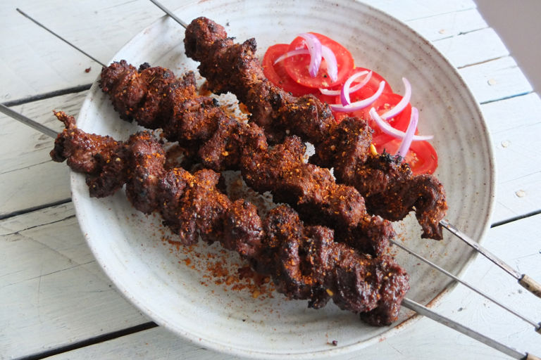

Suya: Spicy grilled beef

Description
Suya is a nigerian delicacy of meat basted with a delicious but peppery groundnut spice and grilled over open flame. Perfect for finger foods.
Ingredients
- 1 tablespoon finely ground roasted peanuts
- 1 teaspoon ground cayenne pepper
- 1 teaspoon ground paprika
- 1 teaspoon salt
- ½ teaspoon ground ginger
- ½ teaspoon garlic powder
- ½ teaspoon onion powder
- 1 ½ pounds beef tri-tip steak, cut into bite-size pieces
- 1 red bell pepper, cut into bite-size pieces
- ¼ onion, cut into bite-size pieces
- 4 mushrooms, halved
Steps
- Mix ground peanuts, cayenne pepper, paprika, salt, ginger, garlic powder, and onion powder together in a bowl.
- Combine spice mixture and beef in a resealable plastic bag; shake until well coated. Marinate in the refrigerator, about 30 minutes.
- Preheat an outdoor grill for medium-high heat and lightly oil the grate.
- Place beef, bell pepper, onion, and mushrooms in alternating order onto skewers.
- Cook on the preheated grill, flipping once, until meat is browned and vegetables are soft, 10 to 15 minutes.
Do not eat if Allergic to nuts!